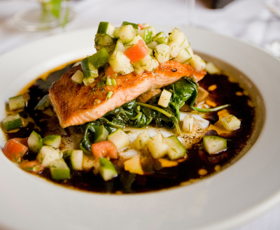

Fact: You can still dine out and maintain your keto diet.
It's all about the choices you make. If you're a fan of fast food your keto friendly options are limited but not impossible. Fast food chains usually reply on carb heavy menus because they're cheap, filling, and fast. But many fast food chains have started to offer healthier options like salads and healthier versions of their sandwiches. However, if you order a sandwich I would suggest eating it with a fork so you can remove the tasty parts from the bun.
 For sit down restaurants there are usually more options. Of course salads are great choice. But a good steak is very tasty and still keto friendly. You will want to avoid things like fries and baked potatoes. But it doesn't hurt to ask if you can substitute those starchy side dishes for a vegetable like broccoli.
For the drink I would suggest water. Zero calories and zero carbs will keep your keto diet on track as well as maintaining a good level of hydration to help your body metabolize the nutrients are consuming.
Many restaurants (especially in America) tend to oversize the portions. A good rule is to eat about half of what is served as your meal and take the other half home as leftovers.
I know that brownie sundae looks delicious but skip it for now. Eat those tasty desserts every once in a while for a treat.
Like most things, practice makes perfect. When you are starting out on your keto journey there will be foods you miss and some that you crave. But with time, patience, and practice you will miss those things less. As you get more familiar with the do's and dont's of the keto diet you will have an easier time deciding on what to eat when you dine out. And never be afraid to ask your waiter / waitress for information about how your meal was prepared. If they don't know they can ask the chef for more information.
Only you can answer that question. But when you see the pounds start to melt off and your waist get smaller you will have a greater idea of whether the keto experience has been worth it.